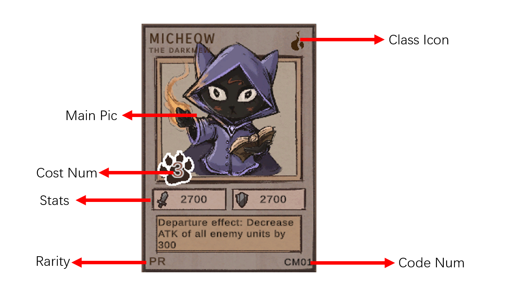
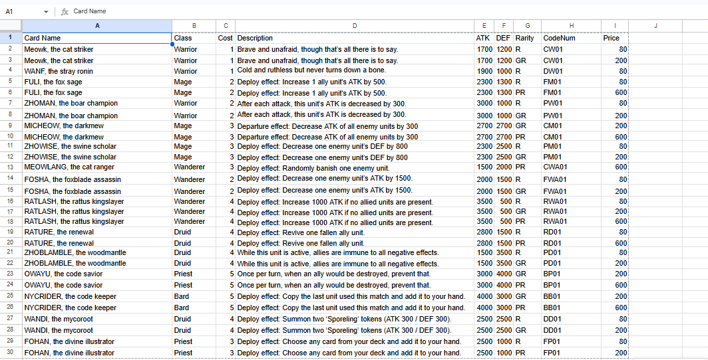
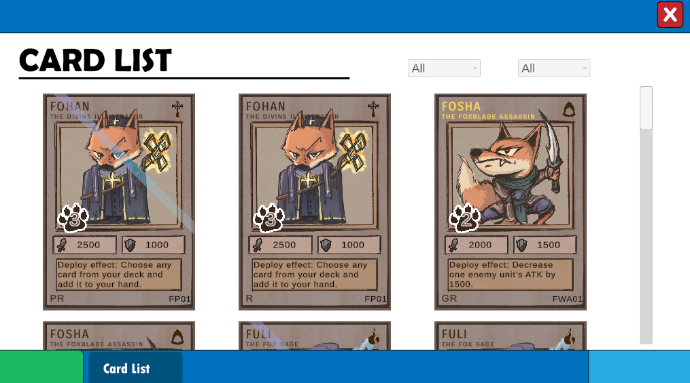

Play it now on Itch.io
For our Ludum Dare 58 entry, the theme was "Collector." What is "collection," really? Collecting TCG cards, of course, is collection!
As an experienced trading card game player, I came up with this concept: I wanted to combine the passport inspection mechanics from Papers, Please with the process of verifying real TCG cards. In this game, you play as a legendary card collector who has died—but even Death respects your mastery and grants you a second chance. If you can use your skills to verify cards and earn enough money, you'll be resurrected. Fail, and you'll be cast into the boiling pits of hell.
I designed the game's core binding system and wrote all in-game text, including contract lore, dialogue, and UI copy. My focus was to make every decision feel like a balance between greed and consequence, reinforcing the theme of "collection at a price."
To successfully appraise a card, players must carefully inspect multiple elements. Any mismatch could mean the card is a forgery.

Fig 1: The anatomy of a card. Players must cross-reference Class Icons, Cost Numbers, Stats, Rarity, and Code Numbers.
To make the appraisal process challenging and engaging, I designed a complete database of "real" cards. I gave each of them special abilities, distinct stats, and balanced pricing to ensure they felt mechanically different.

Fig 2: The backend spreadsheet I created to track and design the card names, classes, costs, effects, and economy.
This is the core gameplay interface where you inspect all the incoming cards. We thoughtfully provided two filters to help players search and verify the extensive card database more efficiently!

Fig 3: The in-game Hell Terminal UI, designed for fast-paced filtering and card verification.